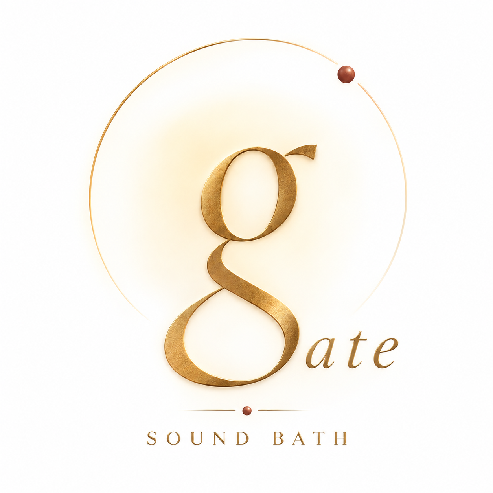

Sound
Mental relaxation. Soothing frequencies calm the mind, release stress, and clear mental static.

Ancient sound x inner stillness x mindful presence x the true self
Grounding, awareness, transformation, embodiment. A portal through sound and vibration, guiding you back to your own quiet center.
Authentic Himalayan Full Moon Bowls
Sound held in sacred metal.Offenbach / Frankfurt am Main
Held one to one, with care.A portal back to yourself
In a fast-moving world, we offer the gentle resonance of singing bowls and sacred pause—inviting you to let go of external noise and allow your busy mind to reset.
GATE is a space to reconnect with your true self and find inner stillness, turning spaciousness into a refined way of living.
The instruments
Sacred Metal (Kassa) x Sound & Vibration x Lunar Energy
Our practice is rooted in the traditional Himalayan sound healing system, utilizing authentic Full Moon Bowls crafted through Nepal's ancient Kassa metalworking art.
Forged from seven planet-linked metals, these sacred bowls are hand-hammered exclusively during the peak energy of a full moon. Over three lunar cycles, the heightened lunar frequency is permanently held in the metal, giving each bowl a uniquely pure, long-sustained vibration.
The 3R Experience
There is no correct way to arrive. Each session responds to your present mind-body state, with space for the experience to unfold at its own pace.
Arrive with your chaos and fatigue—you do not need to hold anything together here. We gently welcome you into the space, just as you are.
Through traditional Nepalese techniques and authentic Full Moon Bowls, your session is personalised. Let the external noise soften as the body moves towards deep relaxation.
As the mind settles, enter a rare space of clarity and stillness—present, aware, and more deeply at home in yourself.
Sessions
Every GATE session is held in a private, attentive setting in Offenbach. Please use the contact form to enquire about availability.
A spacious individual session combining bowl resonance and Reiki.
An extended one-to-one journey, with more time for your body to settle into vibration and quiet.
A small, intimate sound experience to share with someone close to you.
A gentle individual Reiki session, held with calm attention and care.
Brand story
But how are you, really?
In the rush of daily life, we are constantly replying to messages, managing work, and caring for everyone around us; however, we rarely stop to ask our own hearts how we are doing.
GATE is a portal—a space that gently guides you back inward.
When you step into this space, you do not need to play any role, nor do you need to try to be a better version of yourself. You are free to set down the external noise and simply be with yourself in quiet stillness.
Here, there are no tasks to complete, no goals to achieve. Just you, the sound, and a space dedicated to shedding what you no longer need.
Welcome to GATE. A portal back to yourself. Welcome home.
Behind GATE
Singing Bowl Practitioner | Reiki Practitioner
GATE was born from a deep exploration of returning to oneself. On her journey toward inner balance, Emily has practiced yoga and meditation for over a decade, continuously exploring the connection between body, mind, and spirit through Qigong.
During this inner inquiry, she encountered the singing bowls. The moment sound dissolved into silence, her restless thoughts quieted down, reconnecting her with a long-forgotten sense of peace. Moved by this transformation, she travelled to Nepal to study under Master Amit Shrestha at Vedic Healing Nepal.
Testimonials
GATE's site language is English. Reviews originally shared in German and Chinese appear here as carefully edited English translations.
Contact
For a private session, a shared experience, or a question about sound healing, send a note. Emily will reply personally.